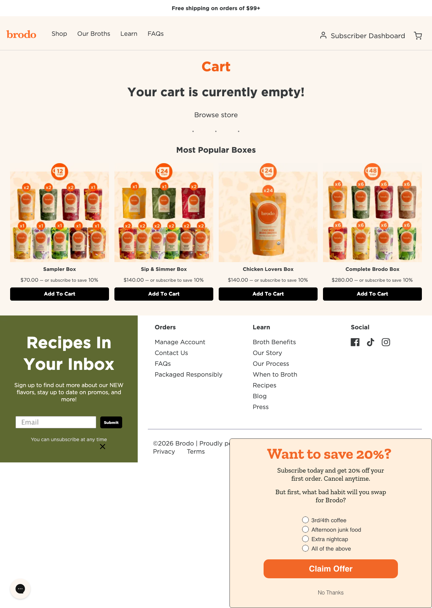
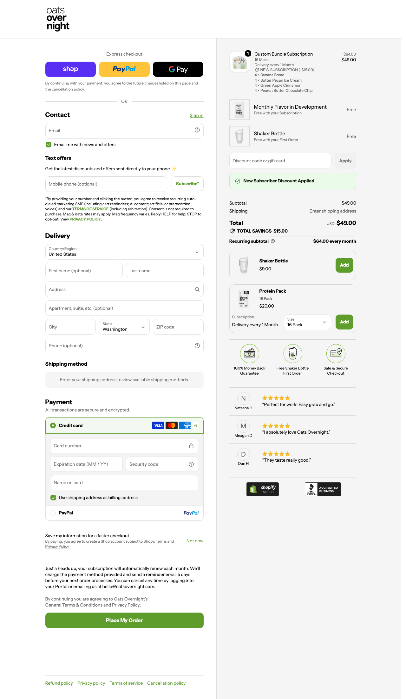

Monday's working session
July 13 · 12:00 PM ET · technical deep-dive with our Solutions Engineer. Here's the plan, and a quick alignment on where things stand today.
Agenda
- Agenda + current state — Nicole ~5 min
- Subscription validation + tech disco — swap, build-a-box, frequency, pause & surveys, plus the right subscription app — Zack & Angel ~25–30 min
- Pricing & TCO — handled in a separate model follow-up
- Revenue upside (if time) + next steps — Nicole ~10 min
Brodo today
PlatformWooCommerce (WordPress), self-hosted on Pressable
SubscriptionsWooCommerce Subscriptions (free) + AutomateWoo
PaymentsStripe · evaluating WooPay + Crepling (2.2% + 20¢)
Online GMV~$30M (est., per call)
ModelDTC — Subscribe & Save, Build-Your-Own-Box, Starter Box; frequent subscriber edits
ChannelsDTC (primary) + Amazon + Faire (wholesale)
Other toolsMetric (reporting), external forms & landing pages, Klaviyo
Largest costInternal development & maintenance
ShopifyTrial account live since April
Three ways to run subscriptions
Zack & Angel's read after the deep-dive: native Subscriptions won't cover your build-a-box / heavy editing, and a fully custom build is a big undertaking — so the route is a purpose-built app, with Awtomic the fit for your Build-Your-Own-Box model (Loop the alternative). Both carry a small per-transaction fee — far below the ~$500K Recharge fear, and dwarfed by your card-rate + dev savings. (Recharge itself isn't in the mix — you're not forced into it.)
Recommended · build-a-box
Awtomic
Third-party · built for build-a-box & bundles
App plan + small per-transaction feePurpose-built for Build-Your-Own-Box — confirm current pricing
- Self-serve portal — subscribers swap SKUs themselves
- Build-a-box, bundles, frequency, skip, pause
- Out-of-box — no custom build to maintain
Zack & Angel: the route that covers your custom needs without a huge custom build.
vs Woo: does your AutomateWoo build-a-box logic out of the box, on Shopify's managed infra.
1.0% per transaction
Loop
Third-party · built for DTC
$99 / month + 1.0% per transactionStarter tier · % only — no flat per-order fee
- Build-a-box + bundle builder
- Multi-product swap, frequency, pause
- Surveys, retention, analytics
Watch-out: a 1% per-transaction fee applies — the only option here that isn't $0.
vs Woo: does out-of-box what you hand-build in AutomateWoo.
| Capability |
Woo (today) |
Awtomic |
Loop |
| Monthly fee | $0 | App plan | $99 |
| Per-transaction fee | None | Small % | 1.0% |
| Build-a-box / swap | Custom-built | Purpose-built | Yes |
| Self-serve SKU swap portal | Custom-built | Yes | Yes |
| Surveys / retention | AutomateWoo | Yes | Yes |
| Hosting / PCI / upkeep | You manage | Managed | Managed |
| Dev burden | High | Low | Low |
Where we landed (Zack & Angel): ❌ native Subscriptions won't cover build-a-box · ⚠️ a fully custom API build is a huge undertaking · ✅ a purpose-built app — Awtomic — covers your build-a-box needs out of the box. Yes, an app carries a small per-transaction fee — but it's far below the ~$500K Recharge-fee fear and is dwarfed by the ~$260K/yr you save on card rates + dev time (see the TCO tab). You're not forced into Recharge.
Checkout: Brodo today vs Shopify
Your WooCommerce checkout is a multi-step, self-hosted flow. Shopify's is one page with Shop Pay's one-tap accelerated checkout — the single biggest conversion lever for a repeat-purchase brand.
Brodo today · WooCommerce

Live capture of brodo.com/checkout (self-hosted WooCommerce/WordPress). Shoppers add a box, then complete a multi-step form and sign in with a WordPress password — no accelerated one-tap path.
On Shopify · Oats Overnight (live)

Oats Overnight — the comparable Nathan called out — live on Shopify: a build-a-box subscription (4 flavors), one-tap Shop Pay / PayPal / G Pay express up top, and in-cart add-ons (Shaker Bottle $9, Protein Pack $20) that lift AOV. This is what Brodo's Build-Your-Own-Box becomes.
📱 Mobile is the biggest unlock. Most of your DTC traffic is on a phone — exactly where a multi-step WooCommerce form loses the most carts. Shop Pay on mobile is literally one tap: no keyboard, no typing a card or address. For a repeat-purchase brand, that frictionless reorder is where the conversion lift compounds.
1 Steps to complete a purchase
Brodo today · WooCommerce
Multi-step WordPress checkout — cart → contact → shipping → payment, details re-entered every time. More steps = more drop-off, especially on mobile.
On Shopify
One-page checkout — the highest-converting on the internet — plus
Shop Pay one-tap for shoppers already enrolled across Shopify's network.
2 Returning & repeat customers
Brodo today · WooCommerce
Shoppers re-enter card + address, or log in with a WordPress password they've usually forgotten.
On Shopify
Shop Pay recognizes the customer and fills everything —
one tap to buy. Card + address already vaulted, no password.
3 Subscription sign-up in the flow
Brodo today · WooCommerce
Subscribe toggle works, but the card sits in Stripe and the flow depends on plugins holding together at renewal.
On Shopify
Subscribe-and-save is native in the same one-page checkout; the token is vaulted in Shopify Payments, so renewals + 1-tap "add to next box" just work.
4 Payment methods offered
Brodo today · WooCommerce
Cards via Stripe (evaluating WooPay). Limited accelerated wallets; Installments not native.
On Shopify
Shop Pay, Shop Pay Installments (BNPL on higher-ticket boxes), Apple/Google Pay and PayPal — all in the box, lifting conversion + AOV.
5 Mobile experience
Brodo today · WooCommerce
Responsive, but still multi-field, multi-step — where most mobile carts are abandoned.
On Shopify
Shop Pay is built mobile-first — the majority of your DTC traffic can complete in a tap or two.
6 Peak-load reliability
Brodo today · WooCommerce
Self-hosted on Pressable — you own uptime, scaling and patching through promos and launches.
On Shopify
Fully managed infrastructure proven at BFCM scale — checkout stays up on your biggest days with zero ops on your side.
Why it matters: Shop Pay checkouts convert up to ~36% higher than guest checkout (est.) — on ~$30M GMV even a modest lift is seven figures. We'll validate against your real conversion + AOV once the questionnaire's in.
TCO & ROI
Two buckets: what you stop spending (operational savings) and what you gain (revenue uplift). Inputs below are filled with industry-standard 2026 benchmarks (sourced in the footnote) while your questionnaire is open — swap in Brodo's real numbers to lock it.
≈ $260K
Lower total cost / yr (est.)
Shopify Plus all-in vs WooCommerce all-in on ~$30M GMV.
$2.5M–$4M
Revenue uplift / yr (est.)
Checkout conversion, AOV and recovered renewals.
~$180K
From the card rate alone
Stripe 2.9% → Shopify Payments ~2.3% on $30M.
Model inputs · industry-standard benchmarks
Public 2026 DTC / WooCommerce benchmarks (sources in footnote), not Brodo's actuals yet — replace with the questionnaire to finalize.
| Input | Benchmark used | Basis |
|---|
| Annual GMV | ~$30M | Brodo, per call |
| Average order value | ~$100 | DTC F&B; Starter Box $140 / Sub $112 |
| Orders / year | ~300,000 | GMV ÷ AOV |
| Subscription % of revenue | ~55% | DTC subscription brand |
| Site conversion rate | ~3.5% | F&B DTC (Polar 3.2% / Shopify 6.2%) |
| Involuntary (failed-renewal) churn | ~30% of churn | subscription benchmark |
| Dev + maintenance (Woo) | ~$150K / yr | heavy-custom store at scale |
| Hosting + Woo plugins | ~$15K / yr | managed WP + subs/AutomateWoo/security |
| Card rate today vs Plus | 2.9%+30¢ → 2.25–2.3%+30¢ | Stripe std → Plus rack (TCO sheet) |
Bucket 1 · Operational savings (all-in annual cost)
"Free on Woo" still costs hosting, plugins and — Zack & Angel's point — a lot of Nathan's time. Here's the all-in annual cost on the benchmarks above.
| Annual cost | WooCommerce today | Shopify Plus |
|---|
| Platform + hosting | ~$9,000 (managed WP) | ~$27,600 (Plus, hosting incl.) |
| Plugins / extensions | ~$6,000 (subs, AutomateWoo, security…) | ~$0 (built-in) |
| Subscription software | $0 (Woo Subs free) | ~$10K (Awtomic app — build-a-box fit) |
| Dev + maintenance (#1 cost) | ~$150,000 | ~$45,000 (managed) |
| Card processing on $30M | ~$960,000 (Stripe 2.9% + 30¢) | ~$780,000 (2.25–2.3% + 30¢) |
| Total / year | ~$1,125,000 | ~$862,600 |
| Lower on Plus | ≈ $260,000 / yr — biggest lever is the card rate (~$180K), then reclaimed dev time (~$105K), net of Plus's higher platform base. |
The point: even before any revenue lift, Plus is ~$260K/yr cheaper all-in on these benchmarks — the card-rate delta (Stripe 2.9% → Shopify ~2.3%) alone is ~$180K, and Nathan's reclaimed time is most of the rest.
Bucket 2 · Revenue uplift potential
The growth levers for a repeat-purchase brand, illustrated on ~$30M GMV. Detail + comps live in the "Revenue upside" tab.
up to +36%
Checkout conversion
One-page + Shop Pay vs multi-step Woo. A modest lift on $30M is seven figures. (est.)
20–30%
Recovered failed renewals
Smart dunning + card updater cut involuntary churn — recovered MRR. (est.)
+14.75%
AOV via bundles / build-a-box
Magic Spoon cross-sell lift on your bundle-and-modify model. (case study)
up to +50%
AOV with Installments
Shop Pay Installments lifts higher-ticket boxes like the Starter Box. (est.)
+29%
Subscription growth
Personalization + 1-tap Shop Pay reorders. (case study)
15–25%
Cancellations saved
Retention flows: "too expensive" → discount; "too much" → pause. (est.)
Net (on industry-standard benchmarks): ≈ $260K/yr lower cost + $2.5M–$4M/yr revenue uplift — together many multiples of Plus + a one-time migration. Swap your real GMV, dev cost, card mix (Amex), subscription % + AOV and conversion into the questionnaire and this locks to Brodo's number.
Your hesitations, answered
The concerns you raised, answered in plain terms.
! "We'll get a sub fee per order, on top of processing."
Reality
Fair — the build-a-box tooling you need comes via an app (Awtomic), which carries a small per-transaction fee. The fear was a ~$500K stacked cost; the real number is a fraction of that.
On Shopify
That app fee is
dwarfed by ~$260K/yr in savings — mainly the card-rate drop (Stripe 2.9% → ~2.3%) and reclaimed dev time. Net, your all-in cost
falls, fee included (see the TCO tab).
! "It only wins if we get higher conversion."
Reality
Fair — but it's not list-price vs list-price. Your biggest Woo cost is Nathan's dev time.
On Shopify
We'll build the full cost picture on your real numbers — and your biggest cost today is dev time, which drops. Conversion is upside on top, not something you have to bet on.
! "We'll end up in a tangle of paid plugins."
Reality
A risk only if you rebuild app-for-app. "Free on Woo" still costs hosting + dev to wire together.
On Shopify
A lot of what you pay for or maintain on Woo is built in — checkout, hosting, email, automation, analytics — so the app list usually shrinks, not grows. We'll map your current tools so there are no surprises.
! "Customers modify subscriptions constantly."
Reality
Your highest bar — native's self-serve swap is lighter than your AutomateWoo setup.
On Shopify
Subscribers can swap, build-a-box, change frequency, pause, and get surveys — Awtomic handles this out of the box, and the team will show it working live.
! "We love Woo's concierge service."
Reality
Real and worth keeping. But service doesn't fix a platform you patch yourselves.
On Shopify
Plus includes a dedicated Merchant Success Manager, launch engineer + 24/7 priority — without the upkeep.
! "Migrating our subscriber data is risky."
Reality
Right to want an expert — the sensitive piece is subscriber + token migration.
On Shopify
Moving subscribers over is a well-worn path — customers don't re-enter their cards — and we do it in phases with a partner so nothing breaks. A fixed, near-term cost, like you said you'd take.
Where the upside is
The levers for a repeat-purchase brand. Shopify benchmarks / case studies — validated on your data.
Up to 36%
Higher checkout conversion
One-page checkout + Shop Pay vs your multi-step Woo flow — the biggest lever for a repeat-purchase brand. (est.)
Recovered
Failed-renewal revenue
Card updater + tokenization cut involuntary churn — renewals that would've failed on expired cards. Pure recovery.
+14.75%
AOV via bundles / build-a-box
Magic Spoon's cross-sell lift; bigger baskets on your bundle-and-modify model. (case study)
Up to 50%
Higher AOV with Installments
Shop Pay Installments lifts baskets on higher-ticket boxes like your Starter Box. (est.)
+29%
Subscription growth
Magic Spoon via personalization; 1-tap Shop Pay reorders for your subscribers. (case study)
Reclaimed
Nathan's dev time
Your #1 Woo cost. Consolidating onto one managed platform moves it from upkeep to growth.
Net: up to ~36% better conversion, ~50% higher AOV with Installments, recovered renewals, and 20–30% lower all-in cost. Next: model it on your real numbers.
Beyond Shop Pay
Shop Pay opens the door — but for a subscription brand at your scale, these are the features that keep revenue from leaking to churn and engineering overhead. Each is native on Shopify and hard to hold together on Woo without heavy custom work.
1 Smart dunning — AI-powered revenue recovery
On WooCommerce
A failed card retries on a fixed schedule; after ~3 misses the subscription cancels. Involuntary churn — expired cards, limits, fraud flags — quietly bleeds revenue.
On Shopify Payments
An AI model trained on billions of transactions picks the best hour and day to retry each specific card — recovering an estimated
20–30% of failed renewals silently, with no "card declined" email.
(est. — validate on your data)
2 Passwordless "magic link" portals
On WooCommerce
To skip, swap, or add a product, subscribers log in with a WordPress password. Forgotten password → reset email → friction → they email support to cancel instead.
On Shopify
Subscription apps (Loop, Skio, and others) use Shopify's identity network to text a 4-digit code or email a magic link — one tap into the portal on their phone, no password. Fewer support tickets, more self-serve saves.
3 Native one-click upsells
On WooCommerce
Adding a one-time product to an upcoming box needs secure token cross-talk — usually multiple heavy plugins that slow the site or glitch during renewals.
On Shopify
Because the card token is vaulted natively, a subscriber taps "add to next order" right from an SMS or email and the contract updates instantly — no checkout. ("Your box ships in 3 days — add our protein powder for 15% off?")
4 Retention flows — why people stay
On WooCommerce
Click "cancel," and most stores simply let them cancel.
On Shopify
Smart cancellation flows branch on the reason: "too expensive" → instant 20% off next box; "too much product" → one-tap "pause 30 days." Dynamic saves regularly rescue an estimated
15–25% of cancellations.
(est.)
5 Multi-currency contracts that actually work
On WooCommerce
If a subscriber signs up in CAD or GBP, keeping the rate locked and stable month over month without gateway errors is a major technical headache.
On Shopify Payments
Multi-currency payouts are native: a Canadian subscriber is billed in CAD every cycle, and Shopify settles to you in USD (or a local account) — handling the banking cleanly. Useful whenever you expand to Canada or the UK.
Bottom line: Shop Pay gets shoppers through the door — but smart dunning, passwordless portals, one-click upsells, and retention flows are what keep a brand your size from losing millions to churn and engineering overhead.
Mutual action plan
A shared, no-pressure path from evaluation to decision — targeting a go-live before the holidays. We move at the pace the data justifies.
| Step | Owner | Target | Status |
|---|
| Phase 1 · Evaluate (now) |
| Subscriptions + capabilities deep-dive | Shopify + Brodo | Jul 13 | Done |
| Complete the data questionnaire — costs, integrations, card mix (Amex), subscription % + AOV, conversion | Andrew + Nathan | This week | Open |
| Confirm subscription-app capabilities — frequency, address & product-selection edits, cancellation survey — vs custom | Zack | This week | Open |
| Phase 2 · TCO / ROI |
| Build all-in TCO + ROI on your real numbers (~$30M GMV, incl. token migration + card mix) | Nicole | Late July | Pending data |
| Review TCO / ROI + capability findings | All | Early Aug | Pending |
| Phase 3 · Decide & plan migration |
| Scoped migration plan — seamless card-token transfer (the non-negotiable) + data + 301s | Nicole + Partner | August | Pending |
| Decision + commercial | Andrew | Late summer | Pending |
| Phase 4 · Migrate & launch (4–6 month build, if it's a clear win) |
| Phased, partner-led migration + QA (tokens, subscriber data, flows) | Partner + Nathan | ~Aug–Nov | Future |
| Go-live before the holidays | Shopify + Brodo | Early December | Future |
Guiding principle: no rushed cutover — but a clear target of early December to beat the holiday rush. Migration runs ~4–6 months, and the non-negotiable is a seamless card-token transfer so no subscriber ever re-enters a card. We prove it out with the TCO first, then commit.